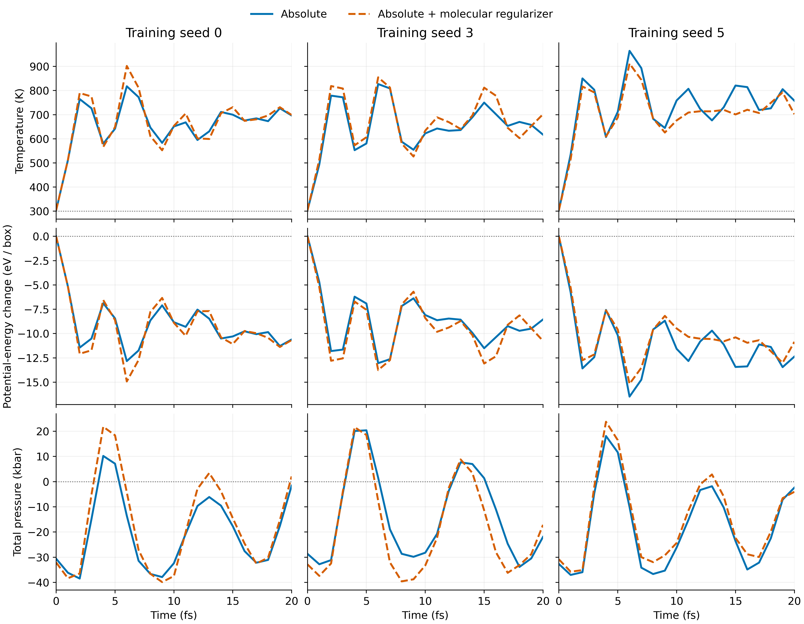

9 October 2026 · TensorNet · same-molecule-exclusion ZBL · extended-training checkpoints · three paired training/split seeds
Presentation conclusion: All six models rapidly heat from the same held-out, topology-clean configuration under a shared 300 K / 1 bar NPT protocol. The molecular regularizer has a seed-dependent effect and does not consistently resolve the preflight failure. These are short diagnostic trajectories.
Raw configuration 1175, held out at split-local indices 1, 93, and 138 for seeds 0, 3, and 5. All saved initial coordinates agree. Velocity seed 0; timestep 0.1 fs; 10 fs nominal equilibration followed by 10 fs nominal production; thermostat damping 100 fs; barostat damping 1000 fs; hydrostatic finite-difference strain 0.003. The phase names are output labels and do not establish equilibration. Initial temperature is 303.8 K. Each curve is one trajectory from one trained model. The 21 time samples are correlated; the three seeds vary both training and the data split. Source: run manifests and histories; topology audit.
| Seed | Condition | Initial potential pressure (kbar) | Final T (K) | Max T (K) | ΔEpot (eV / box) | ΔV (ų and %) | First structural event |
|---|---|---|---|---|---|---|---|
| 0 | Absolute | -34.48 | 696.6 | 817.8 | -10.611 | -6.719 (-0.324%) | intra H–H < 1.2 Å at 16 fs |
| 0 | + regularizer | -35.99 | 698.7 | 902.0 | -10.672 | -5.448 (-0.263%) | None observed through 20 fs |
| 3 | Absolute | -32.55 | 617.2 | 827.0 | -8.551 | -3.914 (-0.189%) | None observed through 20 fs |
| 3 | + regularizer | -36.74 | 701.8 | 854.8 | -10.754 | -5.380 (-0.260%) | None observed through 20 fs |
| 5 | Absolute | -36.57 | 757.9 | 964.6 | -12.371 | -5.868 (-0.283%) | None observed through 20 fs |
| 5 | + regularizer | -34.73 | 702.0 | 912.0 | -10.854 | -4.743 (-0.229%) | None observed through 20 fs |
Endpoint changes are t=20 fs minus t=0. Potential-only pressure subtracts 2 Ekin/(3 V) from recorded total pressure; the initial kinetic contribution is about +3.886 kbar. Energy is a 192-atom box total. Structural thresholds are the existing diagnostic criteria: H–O–H <80°, intra H–H <1.2 Å or <1.0 Å, and inter O–O <2.3 Å. First crossings are resolved at 1 fs sampling intervals. “None observed” is right-censoring at 20 fs, not proof of long-term stability. Sources: the six thermodynamic/structural histories and summaries; threshold definitions in the structural analyzer; pressure convention in the ensemble driver.

Blue solid: absolute. Orange dashed: absolute plus molecular regularizer. Dotted references: 300 K, zero potential-energy change, and 1 bar. Pressure curves show instantaneous total pressure; the table shows initial potential-only pressure. Identical vertical scales within each metric permit direct comparison across seeds. Individual figures are available as PNG, PDF and SVG: temperature, potential energy, and pressure.
Final temperatures span 617.2–757.9 K; maxima span 817.8–964.6 K. Potential energy falls by 8.551–12.371 eV and volume contracts by 3.914–6.719 ų (about 0.19–0.32%) within 20 fs. At seed 0, final temperatures are 696.6 versus 698.7 K, but the regularized model has the higher peak (902.0 versus 817.8 K). The absolute model crosses intra H–H <1.2 Å at 16 fs and angle <80° at 18 fs; the regularized model crosses none of the stored criteria. At seed 3, regularization raises both endpoint and maximum temperature. At seed 5, it lowers both. No consistent thermal benefit is established across these three seeds on this one geometry. These comparisons are descriptive; no method-level significance or equivalence is inferred. Sources: recomputed table and its six linked source directories.
Initial potential pressures are approximately −32.55 to −36.74 kbar. These large tensile predictions and rapid heating prevent an equilibrium-property interpretation. Without DFT stress labels or a reference pressure on this exact configuration, pressure accuracy cannot be quantified from these files. Pressure is concerning relative to the intended protocol; an instantaneous configuration is not required to have exactly 1 bar. Heating and energy descent identify failure of this preflight, but do not establish a unique causal mechanism. The run duration is shorter than both feedback damping times. Sources: saved histories and manifests; stress verifier.
The hydrostatic gate checks sign, projection, volume normalization, strain convergence, and periodic-image invariance. A pass validates numerical consistency. The handoff reports passes for all tested checkpoints, but six checkpoint-specific gate outputs were not found in this checkout. Present those passes as previously reported until the logs are archived. The manifests verify use of the hydrostatic finite-difference path. They do not prove that each checkpoint passed the gate or that learned pressure is accurate. The paper documents earlier gate passes on other starts. Sources: gate implementation, paper NPT discussion around lines 1357–1427, and run manifests.
The dated review in paper/main.tex (lines 103–121) explains that embedded water molecules exchange momentum and torque with their environment. Call the intervention a molecular force/torque regularizer; the legacy “momentum” name remains in filenames. Lower penalty values do not establish greater physical correctness.
The paper's NPT discussion (around lines 1403–1427) describes earlier seeds 0/1 and different starting configurations. Those temperatures, pressures and event times must not be attached to the newer configuration-1175 results. The audit is now present and finds 69–94 clean starts per 160-entry seed split (43.1–58.8%). The existing six-seed static summary is separate from this three-seed trajectory comparison. Its “roughly one standard deviation” heuristic is not a statistical significance test, and the paper flags the legacy momentum metric labeling. Older NVE and fine-tuning claims have split/calibration caveats in the dated review; the matched held-out-start audit does not retroactively repair those studies. Sources: paper dated review, static summary, and topology summary.
The structural summaries include “final_100fs” fields, but this run lasts only 20 fs, so those fields cover the entire available history. They cannot be presented as a 100 fs tail or an equilibrated average. The 510 fs NVT results can be shown separately as longer structural-failure diagnostics, with their own starting-configuration provenance. Sources: summary calculation, six saved summaries, and earlier diagnostics.
Fu et al., Forces are not Enough (2022 preprint; TMLR 2023) motivates simulation-based stability assessment beyond static energy/force errors. Stocker et al., MLST 3, 045010 (2022), DOI 10.1088/2632-2153/ac9955 reports that low test errors can coexist with unstable dynamics; its organic-molecule setting supplies methodological context. Raja et al., StABlE (TMLR 2025) motivates training with simulation observables to improve stability.
The valid current literature comparison is methodological: assess rollout behavior and clearly defined threshold-event times. This 20 fs thermostatted/barostatted preflight does not support a numerical ranking against published simulation lifetimes; dataset, architecture, ensemble and failure criteria must be compatible before such a ranking. Density, equilibrium RDFs and diffusion remain future comparisons requiring stable, equilibrated trajectories. Absence of a structural crossing over 20 fs is insufficient for those calculations. This interpretation follows the three papers' simulation-validation focus and the equilibrium prerequisites already stated in the working paper. The candidate pool in literature_review_candidates.md was reviewed; unverified candidates and unmatched water-property numbers are excluded from today's presentation.
“We now have a controlled short-time comparison from the same topology-clean, held-out water configuration across three training seeds. Every model heats rapidly, and the regularizer's thermal effect changes with seed. One seed shows delayed structural distortion, but we have not established a consistently stable water potential. The numerical pressure path and the physical behavior of the learned potential require separate validation. Our present result is a stability diagnostic; equilibrium density, RDF and diffusion comparisons remain pending.”
Reproduce with .venv/Scripts/python.exe src/prepare_matched_npt_report.py from the repository root. The generation script, report template, full-precision CSV table, and revision, versions, input SHA-256 hashes and validation checks are retained. The source result data and working paper are unchanged. No GPU jobs were run. Figure files use embedded PDF fonts and vector SVG/PDF output, with 400 dpi PNG copies.